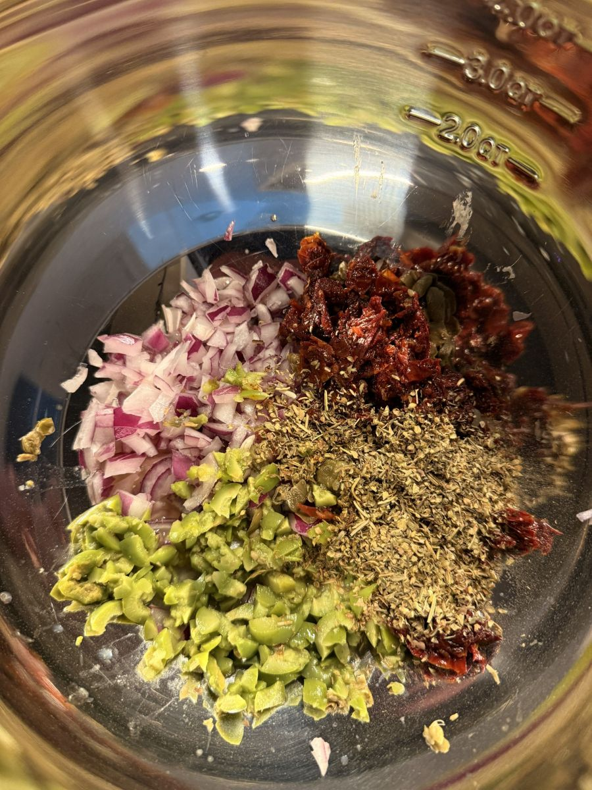

By using oil-packed yellowfin and a double portion of Mediterranean aromatics, we create a dish that moves beyond the pantry staples of the past. It is a redemption of a humble ingredient, best enjoyed after the flavors have had time to unify in the rhythm of a slow marinate.
Overview
Every kitchen behaves differently—use your own judgment with ingredients, allergens, and doneness cues.
This recipe relies on the quality of the tuna and the balance of acids. By utilizing the olive oil directly from the Tonnino jars or cans, we capture the "gold" that emulsifies the dressing naturally.
The overnight rest is the non-negotiable step that transforms the sharp onion and herbs into a complex, mellow profile.
Please be aware that all types of tuna contain some level of mercury, so eating it every day is not recommended from a toxicity perspective. Yellowfin is slightly higher in mercury than some other types of tuna, so do your homework prior to purchasing.
If you stick with yellowfin, try to limit consumption to no more than 2 days per week.
Ingredients

- 3 jars or cans (5 oz each) Tonnino Yellowfin Tuna, packed in olive oil (do not drain; use the oil from the cans)
- 1/2 cup Red onion, finely diced
- 1/2 cup Sun-dried tomatoes, drained and chopped
- 1/2 cup Castelvetrano olives, pitted and chopped
- 2 tbsp Italian seasoning
- 4 tbsp Lemon juice
- 4 tbsp Apple cider vinegar
- To taste: Small pinch of fine sea salt, generous pinch of cracked black pepper
Method
1. Prep the Tuna
- Open the cans of Tonnino yellowfin.
- Using a sharp knife, perform a "cross-hatch" cut directly into the tuna inside the can. This breaks the fish down into manageable chunks before it ever touches the bowl, ensuring consistent texture with minimal effort.
2. Combine the Aromatics
- Place the diced onion, sun-dried tomatoes, olives, Italian seasoning, lemon juice, and apple cider vinegar into a medium-sized mixing bowl.
3. The Mix
- Add the tuna—including all the olive oil from the cans—into the bowl.
- Using a wooden spoon, gently fold the ingredients together until thoroughly combined. The oil will act as the emulsifier for the acid and herbs.
4. Season
- Add a small pinch of salt and a generous amount of cracked black pepper. Mix again.
5. The Rest — This is very important!

- Cover and refrigerate overnight.
- This step is non-negotiable for the flavor profile; it allows the acidity to soften the onions and the flavors to unify into something transcendent.
Tips & Notes
The Tuna: Using high-quality yellowfin in oil (like Tonnino) is the foundation of this recipe. Water-packed tuna will not produce the same rich, "artisanal" result.
The Acid: We found apple cider vinegar provides a cleaner, sharper punch than red wine vinegar, which helps cut through the richness of the oil and olives.
Serving: This salad is versatile—pile it high on crusty bread, serve it with garden-fresh greens, or use it as the anchor to a nourishing grain bowl.
Storage: Keep refrigerated in an airtight container. Because the ingredients "cure" in the acid, it remains vibrant and delicious for several days.